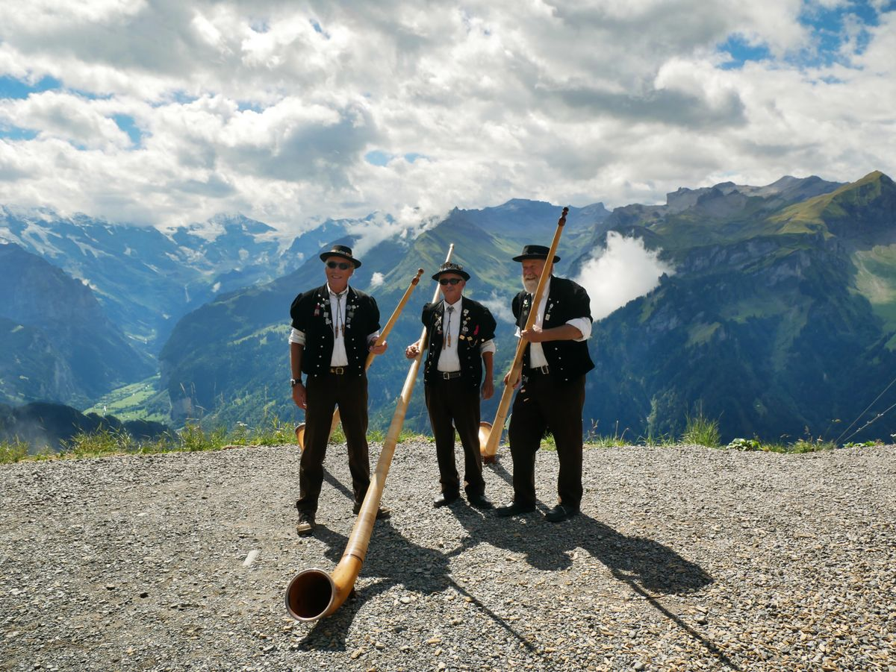

Appenzell · Canton Appenzell Innerrhoden · Est. 1962
YODEL
IS NOT
A TRICK.
I am Kaspar Brunner. I lead the Jodlerklub Echo vom Säntis in Appenzell — thirty-four voices in four rows, rehearsing Tuesdays and Fridays for the Jodlerfest in Herisau on 12 June 2027, where a jury will classify us in front of everyone we know. A yodel is the oldest telephone in these hills: a voice thrown across a valley on purpose. I teach it the way it was taught to me — slowly, by ear, standing in a row.

How the choir stands
FOUR ROWS,
ONE SOUND.
A yodel choir is built like the risers it stands on. Every row has one job, and the sound only works when nobody tries to do somebody else's.
The Lead Line
Vorjodler · 2 voices
The yodel itself. Two voices trade the lead, throwing the melody up into the head voice and letting it fall back to the chest. This is the row I sing in and the row I am hardest on: a lead who shows off breaks the chord for thirty-two other people.
First Voices
Melody choir · 9 voices
The sung verses of the Jodellied and the harmony line that sits closest to the yodel. First voices carry the words, so their diction is rehearsed like a separate instrument — a swallowed syllable is a wrong note the jury can hear.
Second Voices
Harmony · 11 voices
The thirds and sixths underneath. Second voices make the chord warm or make it sour; there is nothing in between. We tune this row against the lead line, interval by interval, until the thirds ring instead of merely landing.
Low Voices
Bass row · 12 voices
The floor of the building. Twelve low voices give the chord its ground note and its patience. A bass row that rushes will drag a whole Naturjodel uphill, so this row rehearses with the metronome nobody is allowed to argue with: my right foot.
The count, in our units
WHAT A SEASON
IS MADE OF
The jury at a Jodlerfest marks sound culture, intonation, rhythm, dynamics and expression, and sorts every choir into a class from 1 to 4. Klasse 1 is not a trophy; it is a debt. You owe the next festival the same standard. How the marking works is explained plainly on the About & Craft page.
Hear it before you sing it
THE BREAK,
IN TWO NOTES.
A yodel is a deliberate break between two registers: the chest voice, where speech lives, and the head voice, where the call lives. Here are the two notes my first-evening singers start from — a chest E and the head E an octave above it. Tap a button and listen; then tap the flip and hear the break happen on purpose. Nothing on this page makes a sound until you ask it to.
Silent. The bench is off until you tap.
The tones are plain reference pitches made in your browser the moment you tap — no recordings, no files, and each one stops on its own inside two seconds. They are a tuning fork, not a performance: the real break is made by a throat, and it cracks a hundred times before it lands clean. That is what rehearsals are for.
The signature tool
PLAN YOUR
SEASON.
Thinking of singing with us at Herisau? Tell the planner your row and how many weeks are left before the festival, and it will work out — from the two tables printed below, not from thin air — how many rehearsals you get, how much of the festival set you can honestly learn, and what your membership costs. If the weeks are too few, it will say so and name the smaller honest option. I would rather lose a singer to the truth in November than to a panic in May.
| Your row | Rehearsals per piece |
|---|---|
| Lead line (Vorjodler) | 4 |
| First voices | 3 |
| Second voices | 3 |
| Low voices | 2 |
| Full season (36 weeks, Sep–Jun) | CHF 360 |
| Per week of the season | CHF 10 |
| Rehearsals every week | 2 (Tue & Fri) |
| Pieces in the festival set | 4 |
| Music folder, once, at cost | CHF 25 |
The rates are the club's real working numbers: a piece is "learned" when your row can hold it against the other three rows, at tempo, with the dynamics marked — not when you can hum it in the kitchen.
Your season
- Rehearsals
- Pieces learned
- Membership due
This season's doors
WHEN TO
COME IN.
& Fri
Open rehearsals — just sit in the back row
No audition, no singing, no obligation. Sit behind the low voices, hear the set being built, and stay for the beer afterwards. If your foot starts keeping time, that is the audition half done.
Fri 5 Feb 2027
Audition evenings — by ear, ten minutes
You sing back short phrases I sing to you, then hold a harmony line while I sing against you. No sheet music, no prepared song, nothing to memorise. I am listening for an ear and a steady nerve, not a finished voice.
June 2027
The Jodlerfest in Herisau
Our adjudication performance: the four-piece set, in Appenzell dress, in front of the jury and half the canton. New singers who joined by February can be standing in the rows — the planner above shows you exactly what it takes.
“Kaspar took a choir that had stood in the third class for a decade and taught us to hear our own thirds. In Zug the jury wrote one sentence I still have framed: ‘the quiet ending was the bravest thing we heard all weekend.’”